Dedecms SP2 前后台审计
第三场 PHP 审计学习 Starting
全局分析
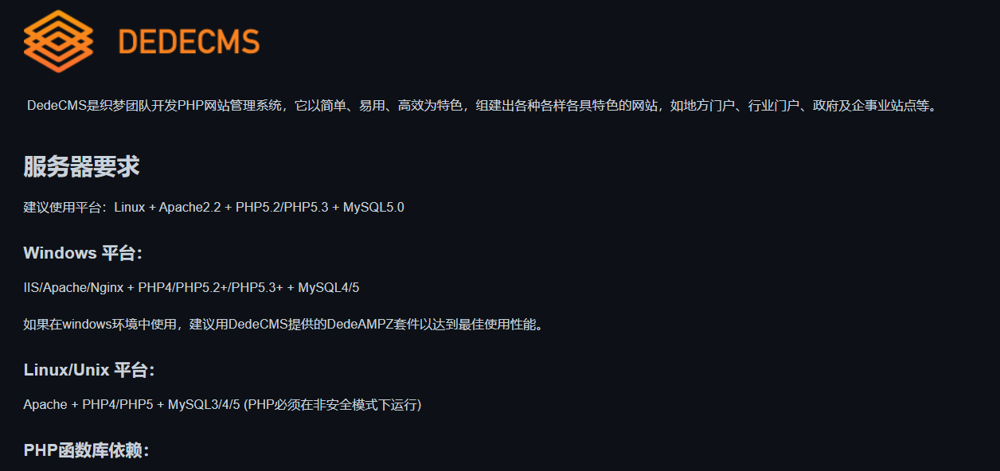5.7 SP2
项目结构
/install 安装程序目录，安装完后可删除[安装时必须有可写入权限]
/dede 默认后台管理目录（可任意改名）
/include 类库文件目录
/plus 附助程序目录
/member 会员目录
/images 系统默认模板图片存放目录
/uploads 默认上传目录(必须可写入)
/a 默认HTML文件存放目录(必须可写入)
/templets 系统默认内核模板目录
/data 系统缓存或其它可写入数据存放目录(必须可写入)
/special 专题目录(生成一次专题后可以删除special/index.php，必须可写入)主要关注四点，路由机制、全局过滤、文件上传、数据库层，模板引擎可能会产生 SSTI，但暂不理会 先看主页代码，data/common.inc.php 是数据库配置文件，如果不存在则直接进入安装页面
#dedecms/index.php
if(!file_exists(dirname(__FILE__).'/data/common.inc.php'))
{
header('Location:install/index.php');
//跳转到安装目录主页
exit();
}
//自动生成HTML版
if(isset($_GET['upcache']) || !file_exists('index.html'))
{
require_once (dirname(__FILE__) . "/include/common.inc.php");
//包含程序初始化文件
...
if ($row['showmod'] == 1){} else {}
}
else{
header('HTTP/1.1 301 Moved Permanently');
header('Location:index.html');}
?>往下生成模板，引用了 include/common.inc.php，我们跟进 这类库文件一般用做程序的初始化，开头做一些系统环境变量和路径定义
define('DEDE_ENVIRONMENT', 'production');
//设置环境为生产环境，并根据环境设置错误报告级别
if ( DEDE_ENVIRONMENT == 'production' )
{
error_reporting(E_ALL || ~E_NOTICE);
} else {
error_reporting(E_ALL);
}
define('DEDEINC', str_replace("\\", '/', dirname(__FILE__) ) );
define();*7
// 定义目录路径常量
define('DEBUG_LEVEL', FALSE);
// 调试开关
if (version_compare(PHP_VERSION, '5.3.0', '<')) // 解决PHP 5.3以下版本的兼容问题
{}
if (version_compare(PHP_VERSION, '5.4.0', '>='))
//兼容PHP 5.4及以上版本的会话函数
{
if (!function_exists('session_register'))
{
function session_register(){}
function session_is_registered($key){}
function session_unregister($key){}
}
}
if(function_exists('mb_substr')) $cfg_is_mb = TRUE;
if(function_exists('iconv_substr')) $cfg_is_iconv = TRUE;然后对外部传参做检测和注册变量，这段检测过滤可以深入分析一下
function _RunMagicQuotes(&$svar)
{
if(!get_magic_quotes_gpc())
{
if( is_array($svar) ){} else {$svar = addslashes($svar);}
//过滤区
}
return $svar;
}
if (!defined('DEDEREQUEST'))
{
//检查和注册外部提交的变量
function CheckRequest(&$val) {
if (is_array($val)) {
} else
{if( strlen($val)>0 && preg_match('#^(cfg_|GLOBALS|_GET|_POST|_COOKIE|_SESSION)#',$val) ){
}
}
//黑名单过滤关键词
}
CheckRequest($_REQUEST);
CheckRequest($_COOKIE);
//对全局变量 REQUEST/COOKIE 进行初步过滤
foreach(Array('_GET','_POST','_COOKIE') as $_request)
{foreach($$_request as $_k => $_v){}}
//对全局变量 GET/POST/COOKIE 进行过滤和转义
}include/common.inc.php#RunMagicQuotes 方法实现了一个 foreach 循环，确认数组内每个值都不匹配 cfg、GLOBALS 等关键词，应当是为了防止变量污染，同时使用 addslashes 转义值
function _RunMagicQuotes(&$svar)
{
if(!get_magic_quotes_gpc())
{
if( is_array($svar) )
{
foreach($svar as $_k => $_v) $svar[$_k] = _RunMagicQuotes($_v);
//依次取出外部输入数组中的每个值，循环迭代再传入本方法中
}
else
{
if( strlen($svar)>0 && preg_match('#^(cfg_|GLOBALS|_GET|_POST|_COOKIE|_SESSION)#',$svar) )
{
//黑名单校验
exit('Request var not allow!');
}
$svar = addslashes($svar);
//再进行转义
}
}
return $svar;
}include/common.inc.php#CheckRequest 也是在递归检测关键词，避免出现非法变量名
function CheckRequest(&$val) {
if (is_array($val)) {
foreach ($val as $_k=>$_v) {
if($_k == 'nvarname') continue;
// 如果键名为nvarname就不校验
CheckRequest($_k);
CheckRequest($val[$_k]);
}
} else
{
if( strlen($val)>0 && preg_match('#^(cfg_|GLOBALS|_GET|_POST|_COOKIE|_SESSION)#',$val) )
{
//黑名单校验
exit('Request var not allow!');
}
}
}虽然这里过滤范围仅为 GET/POST/COOKIE/REQUEST，但在后续调试中果然发现 $_SERVER 也是有被处理的，下图为获取 IP 的功能方法 include/helpers/util.helper.php#GetIP
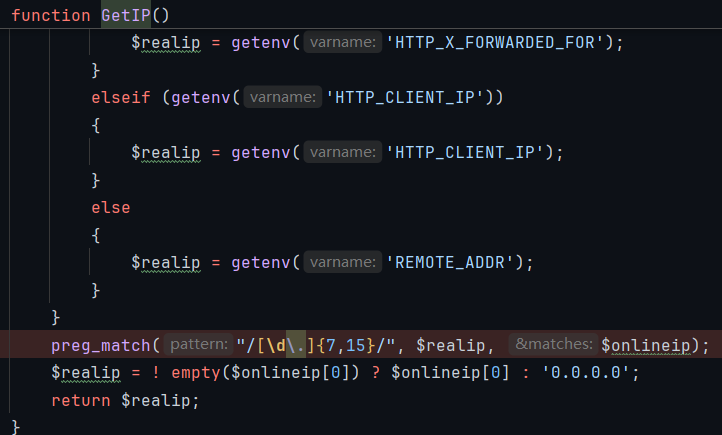 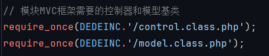dedecms也说自己是 MVC 框架 A.A
include/dedesqlite.class.php 是 dedecms 的核心数据库类，主要关注 SQL 语句过滤部分，一个轻量级WAF
if (!function_exists('CheckSql'))
{
function CheckSql($db_string,$querytype='select')
{
//如果是普通查询语句，直接过滤一些特殊语法
if($querytype=='select')
{
$notallow1 = "[^0-9a-z@\._-]{1,}(union|sleep|benchmark|load_file|outfile)[^0-9a-z@\.-]{1,}";
//$notallow2 = "--|/\*";
if(preg_match("/".$notallow1."/i", $db_string))
{
fputs(fopen($log_file,'a+'),"$userIP||$getUrl||$db_string||SelectBreak\r\n");
exit("<font size='5' color='red'>Safe Alert: Request Error step 1 !</font>");
}
}
//完整的SQL检查
while (TRUE)
{
...
$clean .= substr($db_string, $old_pos);
$clean = trim(strtolower(preg_replace(array('~\s+~s' ), array(' '), $clean)));
//黑名单校验
if (strpos($clean, '@') !== FALSE OR strpos($clean,'char(')!== FALSE OR strpos($clean,'"')!== FALSE
OR strpos($clean,'$s$$s$')!== FALSE){}
//老版本的Mysql并不支持union，常用的程序里也不使用union，但是一些黑客使用它，所以检查它
if (strpos($clean, 'union') !== FALSE && preg_match('~(^|[^a-z])union($|[^[a-z])~s', $clean) != 0){}
//发布版本的程序可能比较少包括--,#这样的注释，但是黑客经常使用它们
elseif (strpos($clean, '/*') > 2 || strpos($clean, '--') !== FALSE || strpos($clean, '#') !== FALSE){}
//这些函数不会被使用，但是黑客会用它来操作文件，down掉数据库
elseif (strpos($clean, 'sleep') !== FALSE && preg_match('~(^|[^a-z])sleep($|[^[a-z])~s', $clean) != 0){}
elseif (strpos($clean, 'benchmark') !== FALSE && preg_match('~(^|[^a-z])benchmark($|[^[a-z])~s', $clean) != 0){}
elseif (strpos($clean, 'load_file') !== FALSE && preg_match('~(^|[^a-z])load_file($|[^[a-z])~s', $clean) != 0){}
elseif (strpos($clean, 'into outfile') !== FALSE && preg_match('~(^|[^a-z])into\s+outfile($|[^[a-z])~s', $clean) != 0){}
//老版本的MYSQL不支持子查询，我们的程序里可能也用得少，但是黑客可以使用它来查询数据库敏感信息
elseif (preg_match('~\([^)]*?select~s', $clean) != 0){}
if (!empty($fail)){}
else{}
}
}关键词黑名单，如果在黑名单内则写入日志记录中，停止程序并返回 Safe Alert
$notallow1 = "[^0-9a-z@\._-]{1,}(union|sleep|benchmark|load_file|outfile)[^0-9a-z@\.-]{1,}";
if(preg_match("/".$notallow1."/i", $db_string))
{
fputs(fopen($log_file,'a+'),"$userIP||$getUrl||$db_string||SelectBreak\r\n");
exit("<font size='5' color='red'>Safe Alert: Request Error step 1 !</font>");
}往下再进行一次关键词过滤，主要包括单引号、union、/*、sleep 等
接下来看文件上传机制，include/uploadsafe.inc.php，这是一个安全过滤文件 先定义一串黑名单
$cfg_not_allowall = "php|pl|cgi|asp|aspx|jsp|php3|shtm|shtml";如果上传使用的是 ckeditor 编辑器，则将 _FILES['upload'] 变量名复制为 _FILES[‘imgfile’]，并且删除被复制的文件上传变量
if ($GLOBALS['cfg_html_editor']=='ckeditor' && isset($_FILES['upload']))
{
$_FILES['imgfile'] = $_FILES['upload'];
$CKUpload = TRUE;
unset($_FILES['upload']);
}检查字段名是否以 cfg_ 或 GLOBALS 开头，如果是则终止程序；
如果字段 name 没被定义，即 name 无值，并且后缀名与黑名单列表匹配上了，或 name 压根没有点，即无后缀名，则进入 if 函数体内。
if( preg_match('#^(cfg_|GLOBALS)#', $_key) )
{
//黑名单校验
exit('Request var not allow for uploadsafe!');
}
$$_key = $_FILES[$_key]['tmp_name'];
${$_key.'_name'} = $_FILES[$_key]['name'];
${$_key.'_type'} = $_FILES[$_key]['type'] = preg_replace('#[^0-9a-z\./]#i', '', $_FILES[$_key]['type']);
${$_key.'_size'} = $_FILES[$_key]['size'] = preg_replace('#[^0-9]#','',$_FILES[$_key]['size']);
if(!empty(${$_key.'_name'}) && (preg_match("#\.(".$cfg_not_allowall.")$#i",${$_key.'_name'}) || !preg_match("#\.#", ${$_key.'_name'})) )
{
if(!defined('DEDEADMIN'))
//DEDEADMIN 常量在 dede/config.php 下被定义，这大约是一个后台配置文件，用于初始化配置、用户登录校验、XSS 过滤、缓存管理等。所以如果是后台管理上传文件，则不用受黑名单限制，如果是前台上传，检测到直接终止程序
{
exit('Not Admin Upload filetype not allow !');
}
}这里都是使用黑名单校验，且黑名单不齐全，如 phtml 等后缀名，或非法绕过方式 p*hp 这类就没做到匹配，过滤机制较弱
最后白名单文件类型校验，判断是否是图片，同时还使用 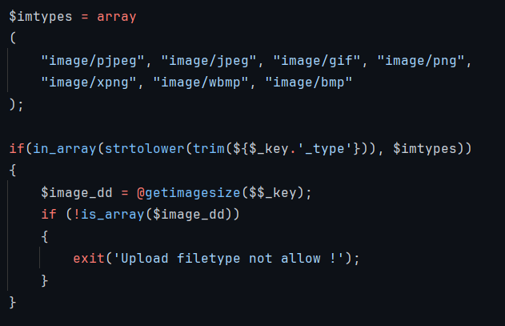getimagesize读取图片大小进行双重校验，如果没大小即 False，则终止
运行机制与路由方面，dedecms 显然是一个多入口的框架，即通过直接访问对应 php 文件来调用服务，核心业务区应该就是 member、dede，即会员管理和后台管理
源码审计
会员任意密码重置
漏洞点在前台重置密码 member/resetpassword.php 程序设计上分为三个阶段，分别用 if-elseif 隔开
- getpwd：选择验证方式（邮箱/安全问题）
- safequestion：安全问题验证
- getpasswd：密码修改 第一块 getpwd 判定是验证码找回还是问题校验，验证码直接发送，问题校验跳转进第二块 safequestion，如果 safequestion 问题校验正确则进入第三块 getpasswd 修改密码
elseif($dopost == "getpwd")
{}
else if($dopost == "safequestion")
{}
else if($dopost == "getpasswd")
{//修改密码}逐一分析逻辑，先说 getpwd，它先验证输入验证码是否正确，判断外部传参 mail、userid 是否为空，再检查 mail 和 userid 格式是否非法，member/inc/inc_pwd_functions.php#member 类方法还通过 mail 和 userid 双重属性检测来判断用户是否存在
elseif($dopost == "getpwd")
{
if(!isset($vdcode)) $vdcode = '';
$svali = GetCkVdValue();
if(strtolower($vdcode) != $svali || $svali==''){}
//校验验证码是否正确
if(empty($mail) && empty($userid)){}
else if (!preg_match("#(.*)@(.*)\.(.*)#", $mail)){}
else if (CheckUserID($userid, '', false) != 'ok'){}
//验证邮箱，用户名，如果不正确则终止程序
$member = member($mail, $userid);如果 type == 1 则直接进 member/inc/inc_pwd_functions.php#sn 发送验证码，为 2 则渲染 templets/resetpassword3.htm 回前端，即 getpwd -> safequestion
if($type == 1)
{
if($cfg_sendmail_bysmtp == "Y")
{ sn($member['mid'],$userid,$member['email']);
}else{}
//判断系统邮件服务是否开启
//邮件服务暂未开启退出程序
} else if ($type == 2)
{
//以安全问题取回密码
if($member['safequestion'] == 0){}
//为0则表明没设置安全问题，终止程序
require_once(dirname(__FILE__)."/templets/resetpassword3.htm");
}
exit();跟进 #sn，传入指定的 mid、userid、mail 来发送邮件，如果十分钟内发送过一次，则重定向至登录页面，否则 member/inc/inc_pwd_functions.php#newmail 发送邮件
function sn($mid,$userid,$mailto, $send = 'Y')
{
global $db;
$tptim= (60*10);
$dtime = time();
$sql = "SELECT * FROM #@__pwd_tmp WHERE mid = '$mid'";
$row = $db->GetOne($sql);
if(!is_array($row))
{
//发送新邮件；
newmail($mid,$userid,$mailto,'INSERT',$send);
}
//10分钟后可以再次发送新验证码；
elseif($dtime - $tptim > $row['mailtime'])
{
newmail($mid,$userid,$mailto,'UPDATE',$send);
}
//重新发送新的验证码确认邮件；
else
{
return ShowMsg('对不起，请10分钟后再重新申请', 'login.php');
}
}继续进 #newmail，如果 send 为 Y 直接发送邮件，如果为 N 则跳转到修改页， #sn 是控制 1-3 块跳转逻辑的关键函数，同时也是漏洞的关键点
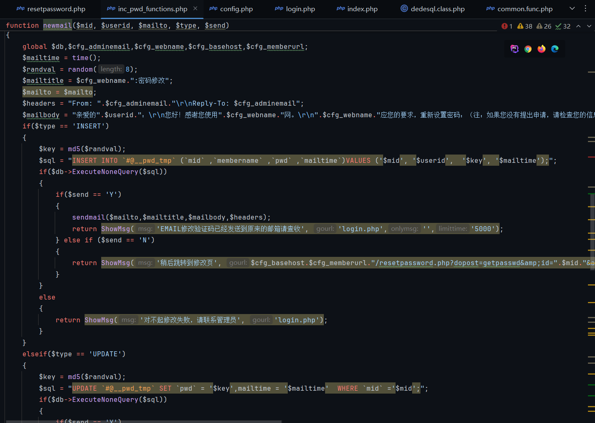#sn做验证码操作，根本不受不知道用户名密码的影响，主要是 safequestion 逻辑存在漏洞
用户创建时如果没设置安全问题，那在数据库中存储的字段就为空，为空程序就赋值为 “"，这就是得双等于弱比较能够被绕过，任何没设置安全问题的账号都存在这个风险
else if($dopost == "safequestion")
{
$mid = preg_replace("#[^0-9]#", "", $id);
$sql = "SELECT safequestion,safeanswer,userid,email FROM #@__member WHERE mid = '$mid'";
$row = $db->GetOne($sql);
if(empty($safequestion)) $safequestion = '';
if(empty($safeanswer)) $safeanswer = '';
if($row['safequestion'] == $safequestion && $row['safeanswer'] == $safeanswer)
//这里存在弱等于直接绕过
{
sn($mid, $row['userid'], $row['email'], 'N');
exit();
}
else
{
ShowMsg("对不起，您的安全问题或答案回答错误","-1");
exit();
}
}然后跳转 sn，再跳转 newmail，它会生成一串随机数并进行 md5 加密，在该 dedecms 中叫临时密码，然后存入 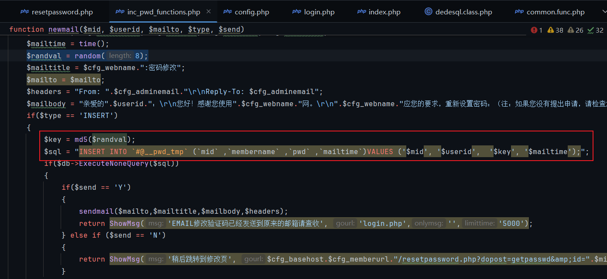 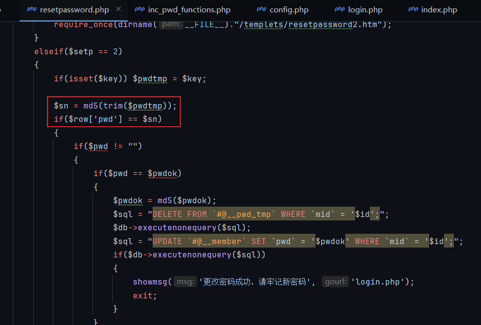dede_pwd_tmp表中，最后将 id 及临时密码作为 url 返回
POST /member/resetpassword.php HTTP/1.1
Host: 192.168.43.169:8089
Content-Type: application/x-www-form-urlencoded
Content-Length: 0
dopost=safequestion&id=1&userid=test1&safequestion=00&safeanswer=0&vdcode=embh&type=2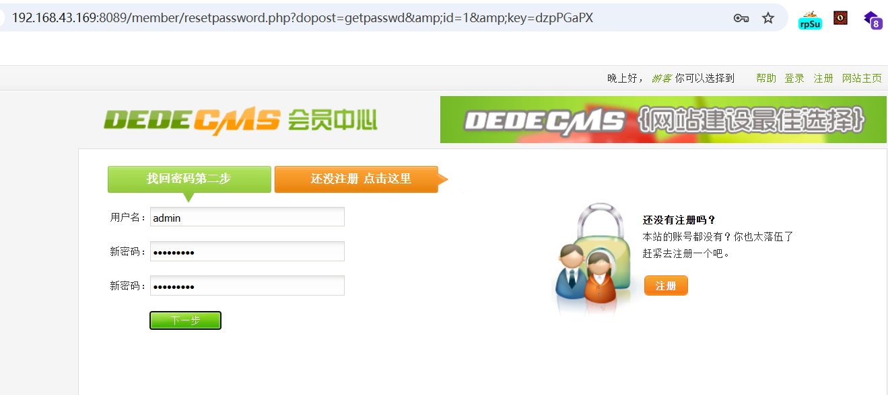 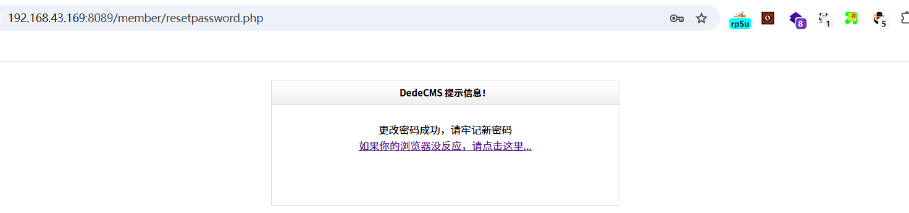
if($row['safequestion'] == $safequestion && $row['safeanswer'] == $safeanswer)
{
sn($mid, $row['userid'], $row['email'], 'N');
exit();
}修复为
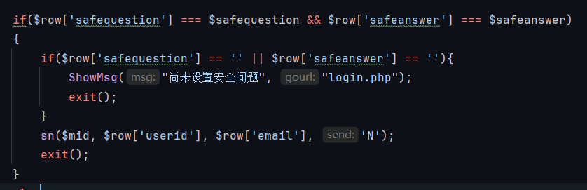
前台文件上传
在文章、商品、分类信息等文章发布处，存在文件上传接口服务
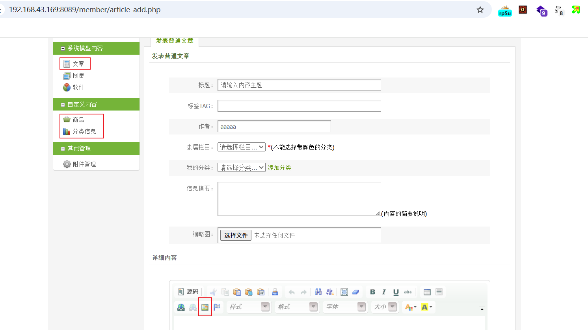 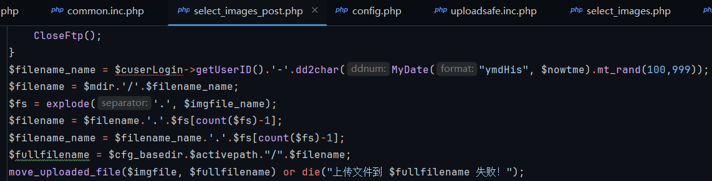 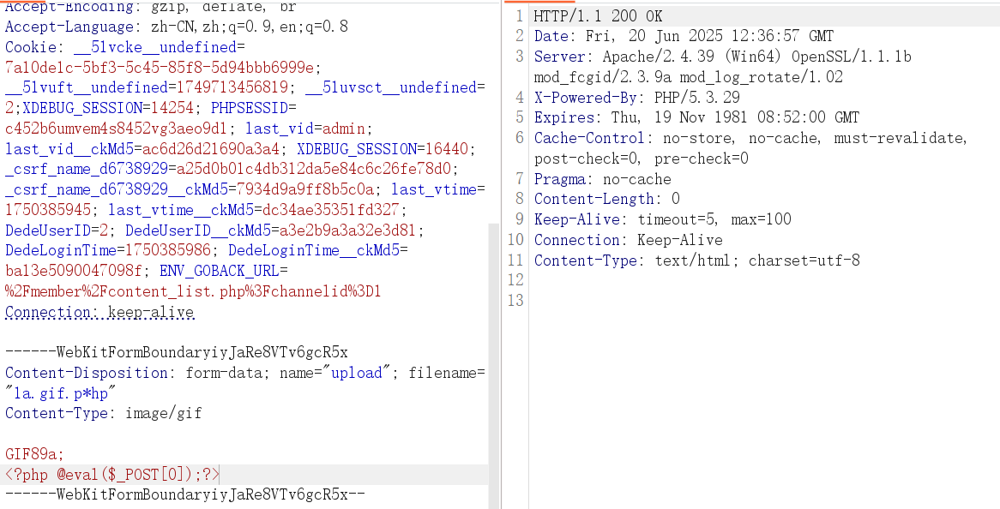 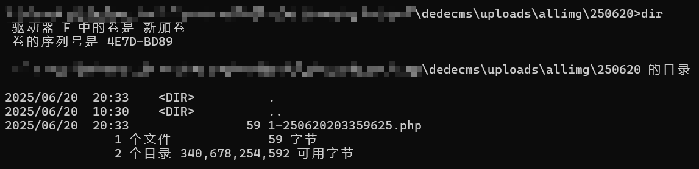 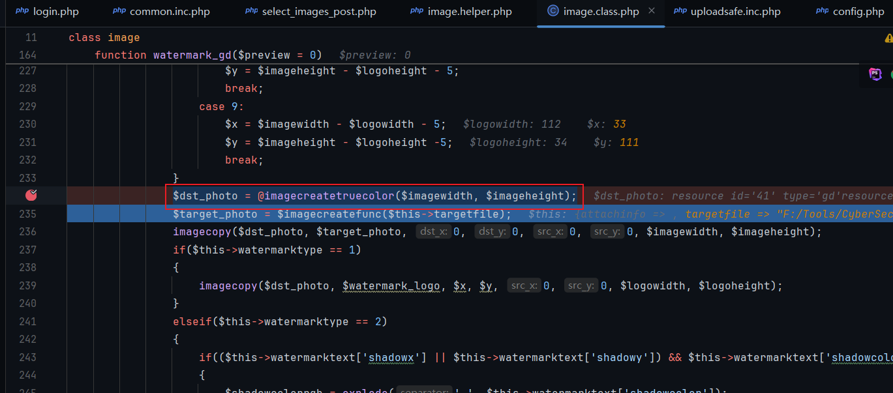 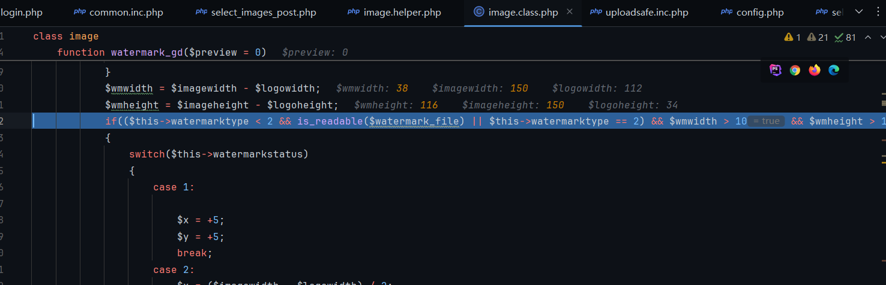 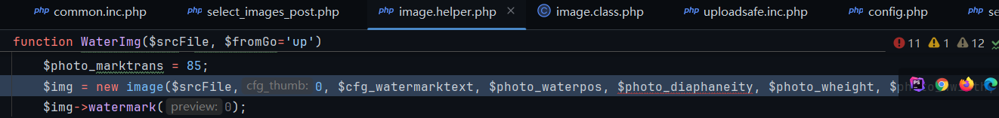 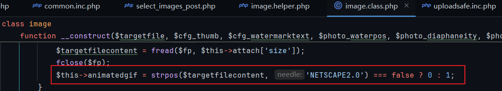 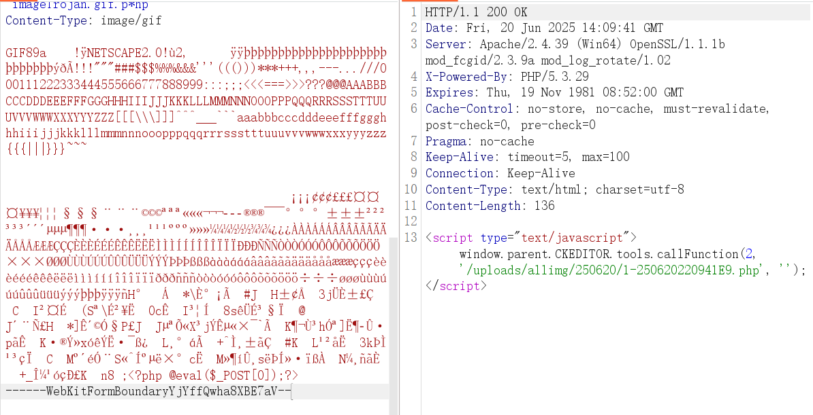 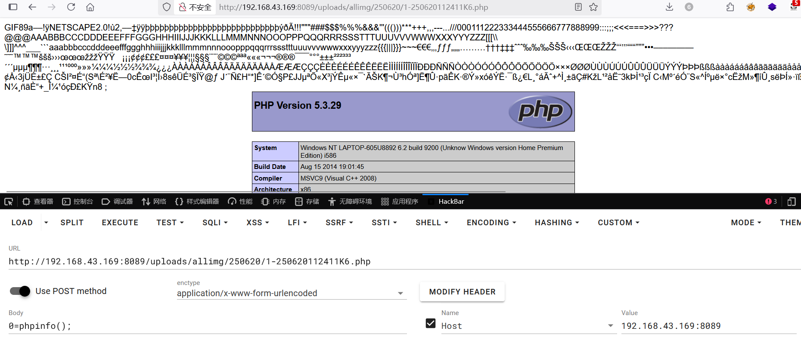
后台反射型XSS
后台登录检测，先进行验证码检验，如果不正确则执行 ShowMsg
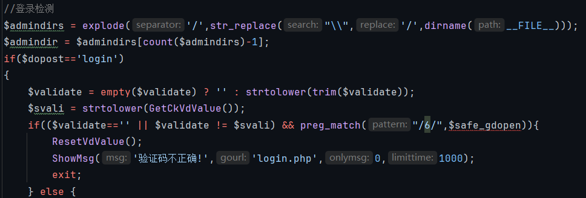
include/common.func.php#ShowMsg 将跳转 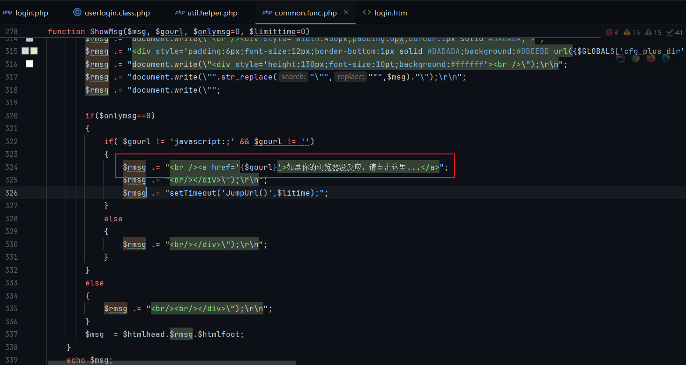<a href=''></a>拼接并返回给前端
前端经过渲染最后达到以下跳转的效果，默认会直接跳转，如果没跳转点击可以触发 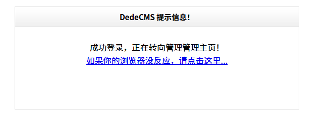 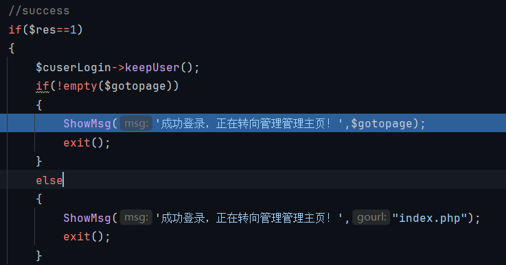<a herf=''>
$gotopage，通过全局查找并没有发现该参数被定义，dedecms 参数并不直接在业务代码中使用 $_GET、$_POST接收，而是在公共文件中初始化时便注册，这有可能就是一个外部传参可控变量
手动追踪数据流，去看看前端模板 html 中怎么定义 $gotopage，找到模板位置
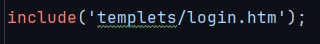
在前端后台主页模板中发现这是一个隐藏字段，是可控的，但被 RemoveXSS 过滤了
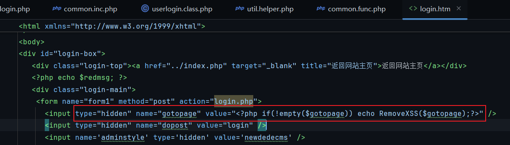 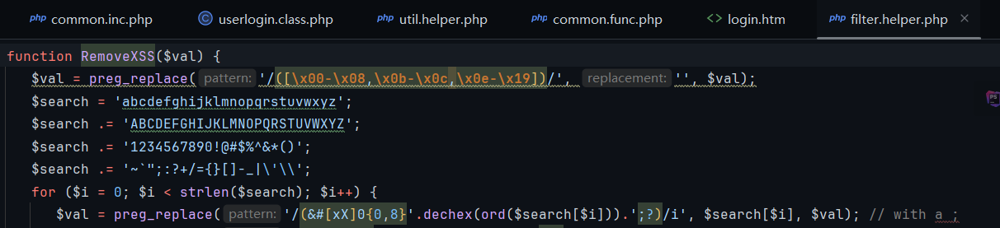
全部代码如下
if ( ! function_exists('RemoveXSS'))
{
function RemoveXSS($val) {
$val = preg_replace('/([\x00-\x08,\x0b-\x0c,\x0e-\x19])/', '', $val);
$search = 'abcdefghijklmnopqrstuvwxyz';
$search .= 'ABCDEFGHIJKLMNOPQRSTUVWXYZ';
$search .= '1234567890!@#$%^&*()';
$search .= '~`";:?+/={}[]-_|\'\\';
for ($i = 0; $i < strlen($search); $i++) {
$val = preg_replace('/(&#[xX]0{0,8}'.dechex(ord($search[$i])).';?)/i', $search[$i], $val); // with a ;
$val = preg_replace('/(�{0,8}'.ord($search[$i]).';?)/', $search[$i], $val); // with a ;
}
$ra1 = array('javascript', 'vbscript', 'expression', 'applet', 'meta', 'xml', 'blink', 'link', 'style', 'script', 'embed', 'object', 'iframe', 'frame', 'frameset', 'ilayer', 'layer', 'bgsound', 'title', 'base');
$ra2 = array('onabort', 'onactivate', 'onafterprint', 'onafterupdate', 'onbeforeactivate', 'onbeforecopy', 'onbeforecut', 'onbeforedeactivate', 'onbeforeeditfocus', 'onbeforepaste', 'onbeforeprint', 'onbeforeunload', 'onbeforeupdate', 'onblur', 'onbounce', 'oncellchange', 'onchange', 'onclick', 'oncontextmenu', 'oncontrolselect', 'oncopy', 'oncut', 'ondataavailable', 'ondatasetchanged', 'ondatasetcomplete', 'ondblclick', 'ondeactivate', 'ondrag', 'ondragend', 'ondragenter', 'ondragleave', 'ondragover', 'ondragstart', 'ondrop', 'onerror', 'onerrorupdate', 'onfilterchange', 'onfinish', 'onfocus', 'onfocusin', 'onfocusout', 'onhelp', 'onkeydown', 'onkeypress', 'onkeyup', 'onlayoutcomplete', 'onload', 'onlosecapture', 'onmousedown', 'onmouseenter', 'onmouseleave', 'onmousemove', 'onmouseout', 'onmouseover', 'onmouseup', 'onmousewheel', 'onmove', 'onmoveend', 'onmovestart', 'onpaste', 'onpropertychange', 'onreadystatechange', 'onreset', 'onresize', 'onresizeend', 'onresizestart', 'onrowenter', 'onrowexit', 'onrowsdelete', 'onrowsinserted', 'onscroll', 'onselect', 'onselectionchange', 'onselectstart', 'onstart', 'onstop', 'onsubmit', 'onunload');
$ra = array_merge($ra1, $ra2);
$found = true;
while ($found == true) {
$val_before = $val;
for ($i = 0; $i < sizeof($ra); $i++) {
$pattern = '/';
for ($j = 0; $j < strlen($ra[$i]); $j++) {
if ($j > 0) {
$pattern .= '(';
$pattern .= '(&#[xX]0{0,8}([9ab]);)';
$pattern .= '|';
$pattern .= '|(�{0,8}([9|10|13]);)';
$pattern .= ')*';
}
$pattern .= $ra[$i][$j];
}
$pattern .= '/i';
$replacement = substr($ra[$i], 0, 2).'<x>'.substr($ra[$i], 2);
$val = preg_replace($pattern, $replacement, $val);
if ($val_before == $val) {
$found = false;
}
}
}
return $val;
}
}先对内容进行一次清理，删除除 \t \n \r 外控制符，然后解码十六进制、十进制 HTML 实体编码
$val = preg_replace('/([\x00-\x08,\x0b-\x0c,\x0e-\x19])/', '', $val);
$search = 'abcdefghijklmnopqrstuvwxyz';
$search .= 'ABCDEFGHIJKLMNOPQRSTUVWXYZ';
$search .= '1234567890!@#$%^&*()';
$search .= '~`";:?+/={}[]-_|\'\\';
for ($i = 0; $i < strlen($search); $i++) {
$val = preg_replace('/(&#[xX]0{0,8}'.dechex(ord($search[$i])).';?)/i', $search[$i], $val); // with a ;
$val = preg_replace('/(�{0,8}'.ord($search[$i]).';?)/', $search[$i], $val); // with a ;
}黑名单过滤，写了一个正则模式，就是给 javascript这类字符每个之间都插入匹配，防止使用恶意字符绕过，假如匹配到，则会将 javascript替换为类似 ja<x>vasc<x>ript
$ra1 = array('javascript', 'vbscript', 'expression', 'applet', 'meta', 'xml', 'blink', 'link', 'style', 'script', 'embed', 'object', 'iframe', 'frame', 'frameset', 'ilayer', 'layer', 'bgsound', 'title', 'base');
$ra2 = array('onabort', 'onactivate', 'onafterprint', 'onafterupdate', 'onbeforeactivate', 'onbeforecopy', 'onbeforecut', 'onbeforedeactivate', 'onbeforeeditfocus', 'onbeforepaste', 'onbeforeprint', 'onbeforeunload', 'onbeforeupdate', 'onblur', 'onbounce', 'oncellchange', 'onchange', 'onclick', 'oncontextmenu', 'oncontrolselect', 'oncopy', 'oncut', 'ondataavailable', 'ondatasetchanged', 'ondatasetcomplete', 'ondblclick', 'ondeactivate', 'ondrag', 'ondragend', 'ondragenter', 'ondragleave', 'ondragover', 'ondragstart', 'ondrop', 'onerror', 'onerrorupdate', 'onfilterchange', 'onfinish', 'onfocus', 'onfocusin', 'onfocusout', 'onhelp', 'onkeydown', 'onkeypress', 'onkeyup', 'onlayoutcomplete', 'onload', 'onlosecapture', 'onmousedown', 'onmouseenter', 'onmouseleave', 'onmousemove', 'onmouseout', 'onmouseover', 'onmouseup', 'onmousewheel', 'onmove', 'onmoveend', 'onmovestart', 'onpaste', 'onpropertychange', 'onreadystatechange', 'onreset', 'onresize', 'onresizeend', 'onresizestart', 'onrowenter', 'onrowexit', 'onrowsdelete', 'onrowsinserted', 'onscroll', 'onselect', 'onselectionchange', 'onselectstart', 'onstart', 'onstop', 'onsubmit', 'onunload');
$ra = array_merge($ra1, $ra2);
$found = true;
while ($found == true) {
$val_before = $val;
for ($i = 0; $i < sizeof($ra); $i++) {
$pattern = '/';
for ($j = 0; $j < strlen($ra[$i]); $j++) {
if ($j > 0) {
$pattern .= '(';
$pattern .= '(&#[xX]0{0,8}([9ab]);)';
$pattern .= '|';
$pattern .= '|(�{0,8}([9|10|13]);)';
$pattern .= ')*';
}
$pattern .= $ra[$i][$j];
}
$pattern .= '/i';
$replacement = substr($ra[$i], 0, 2).'<x>'.substr($ra[$i], 2);
$val = preg_replace($pattern, $replacement, $val);
if ($val_before == $val) {
$found = false;
}
}
}
return $val;这里结合前端浏览器特性，是存在绕过可能的，如果我们输入的是一个 HTML 编码的值，会自动被解码一次并渲染回显来，这并不会导致前端触发 XSS，不然很多 XSS 都可以直接通杀，但假如该值被作为一个参数传到后端，浏览器默认会将解码后的值发送过去，而这里刚好吻合了所有条件 我们传入二次 HTML 编码加 URL 编码后的 Payload，经过一次 URL 编码和 HTML 编码，并没有被还原回初始 Payload，绕过黑名单过滤，再接着被浏览器经过一次 HTML 解码后作为外部传参给
/dede/login.php?gotopage=javascrip%26%2338%3B%26%2335%3B%26%2349%3B%26%2349%3B%26%2354%3B%26%2359%3B:alert(document.cookie);登录后点击跳转
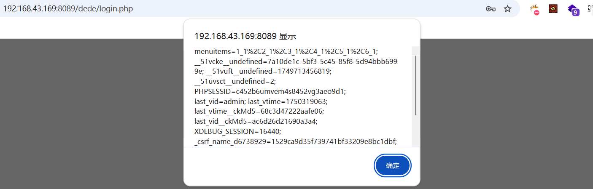
后台文件上传
在后台核心 -> 文件式管理器存在文件上传接口，由于缺少权限限制，后台权限过大导致直接可以上传任意文件
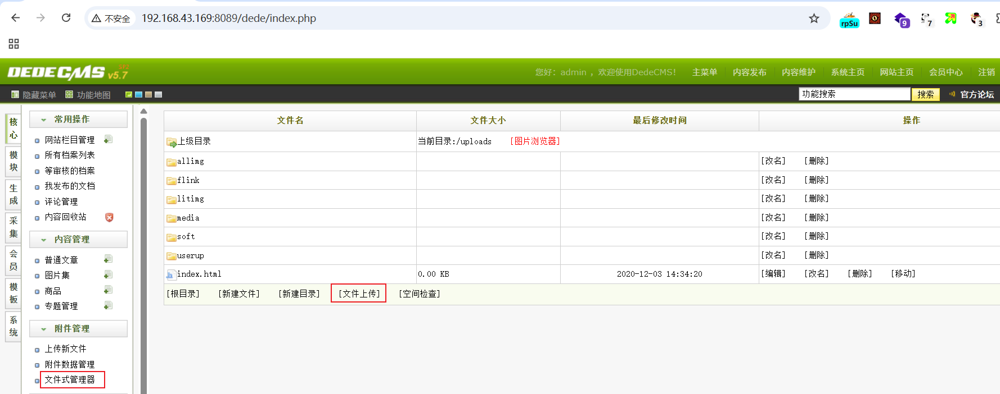 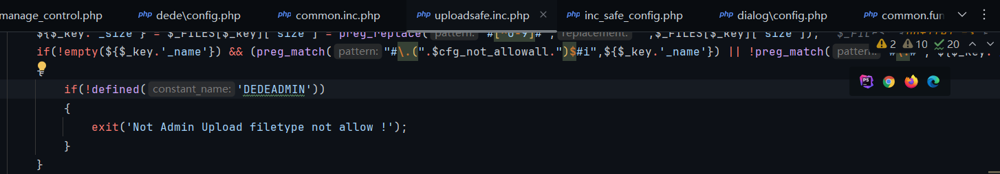 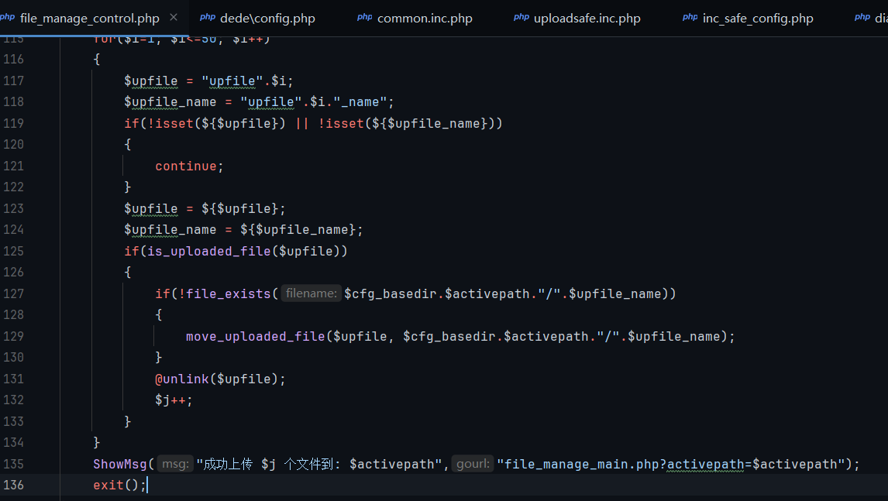 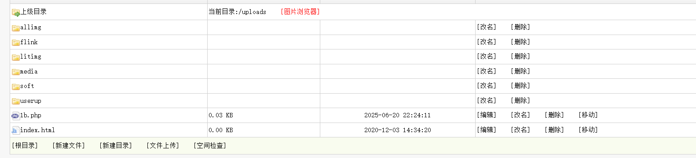defined('DEDEADMIN')即进入后台之后，就放行
后台系统设置getshell
DedeCMS 后台配置通过 config.cache.inc.php 控制
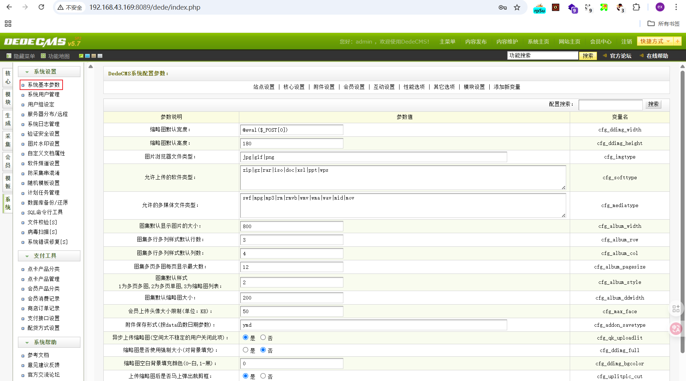 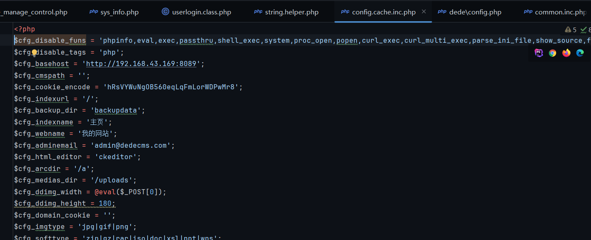 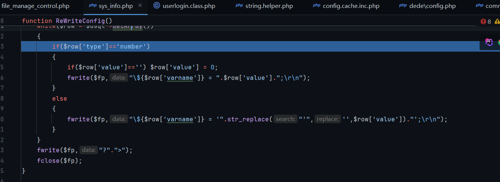 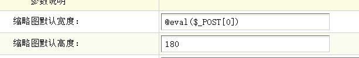 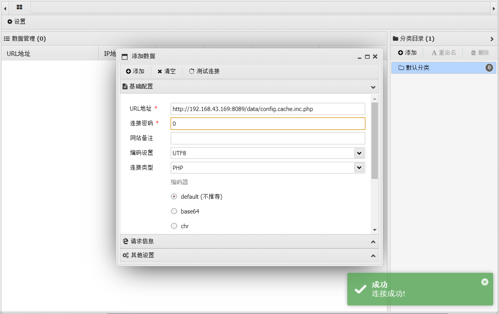$row['type']是否为 number，是则不加引号，我们只要找类型为数字的写入一句话木马即可 GetShell
PS. 尽管每个漏洞技术点都不深，但是真的去独立审计的话也找不到这些洞，看那些业务逻辑都眼花缭乱了…即“练的太少”